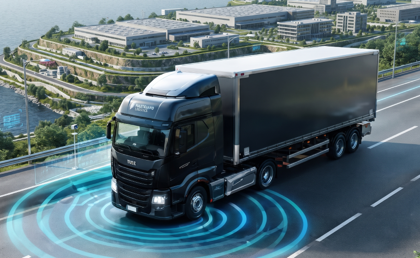

Your drivers are on the road at 3 AM.
Long-haul, night shifts, tight delivery windows. You can’t see who is fighting sleep.
In-cab monitoring spots fatigue and distraction before a driver loses focus.BUILT IN INDIA. 120,000+ VEHICLES MONITORED.
ADAS and driver monitoring in one device. It spots drowsiness, distraction and risky driving, warns the driver in seconds, and shows your safety team exactly what is happening.
TRUSTED BY FLEETS AND OEMS
SOUND FAMILIAR?
Long-haul, night shifts, tight delivery windows. You can’t see who is fighting sleep.
In-cab monitoring spots fatigue and distraction before a driver loses focus.The footage helps after the accident. It does nothing for the next mile.
AI alerts warn drivers about risks while they can still respond.By then, a driver may have taken the same risk again.
Live event alerts put the right information in your team’s hands sooner.A classroom session changes little on a highway at midnight.
Use real events and video to make driver coaching timely and specific.AI FLEET SAFETY SOLUTIONS

Detects drowsiness and distraction in the device and alerts the driver in real time, day or night.

Reads the road ahead and warns of collision risks, while recording every trip with GPS and video.

Every alert, dashboard and report in one place, so your safety team can act on what matters.

Advanced driver monitoring, video intelligence and fleet-level insights for operations that need a deeper view.

GPS, video, ADAS and driver monitoring in a single unit. The simple way to make every fleet safer.
| What you need to know | GPS tracker or basic dashcam | Novus AI fleet safety |
|---|---|---|
| Driver drowsy or distracted | No alert | Driver warned in the cab, team alerted |
| Collision risk ahead | Recorded after the fact | Warns before it happens |
| When you find out | When someone reviews footage | In seconds, with video |
| Driver behaviour | Speed and location only | Scored, coached and rewarded |

Thousands of tankers carrying flammable fuel across states, mostly at night. Novus combined AI monitoring, live risk visibility and driver coaching with rewards.
Results reported in the Nayara Energy Annual Report FY23-24
Get the full case studyHazardous cargo, high-consequence routes, night driving.
Long-haul miles and tight delivery windows.
Passenger trust on every route, every shift.
Busy city streets, delivery pressure and driving risks.
Vehicle types, routes, shifts and the risks that worry you most.
Fit a few vehicles and watch real risk events come in from your routes.
Scale with driver coaching, safety dashboards and AI insights to your fleet systems.
WHY FLEETS CHOOSE NOVUS
Turnkey ADAS and driver monitoring systems for global OEMs.
Alerts in the cab, even when the network drops.
Designed for real traffic, weather, road conditions and long shifts.
Production-ready ADAS and DMS technology, with AIS-184 homologation.
AWARDS AND RECOGNITION
/filters:quality(100)/filters:proportion(1)/enquiry.novushitech.com/award-1.webp)
Generative AI Excellence Award 2023
/filters:quality(100)/filters:proportion(1)/enquiry.novushitech.com/award-2.webp)
Entrepreneur of the Year Award 2023
/filters:quality(100)/filters:proportion(1)/enquiry.novushitech.com/award-3.webp)
First Prize National Award for Innovation by Ministry of MSME, Government of India
/filters:quality(100)/filters:proportion(1)/enquiry.novushitech.com/award-4.webp)
CII- Grand Award Winner Most Innovative Company 2017
/filters:quality(100)/filters:proportion(1)/enquiry.novushitech.com/award-5.webp)
NASSCOM Award for Most Promising Emerging Companies 2016
/filters:quality(100)/filters:proportion(1)/enquiry.novushitech.com/award-6.webp)
Daimler Excellence in Innovation Award- 2019
/filters:quality(100)/filters:proportion(1)/enquiry.novushitech.com/award-7.webp)
APAC Insider-Indian Business Excellence Best Self-Driving Technology 2017
/filters:quality(100)/filters:proportion(1)/enquiry.novushitech.com/award-8.webp)
Frost & Sullivan Award for Most Innovative Product 2017
No. It combines AI-powered driver monitoring, road-facing ADAS, GPS and video, then turns events into alerts and fleet insights.
Yes. The in-cab system monitors driver behaviour day and night and can warn the driver when it detects fatigue or distraction.
Drivers get immediate, in-cab alerts and fleets can use real event data for timely, specific coaching.
Novus fleet safety solutions bring vehicle, driver and event information together and can integrate with fleet operations systems.
It depends on your vehicles, hardware and fleet requirements. Talk to our team to discuss the right starting point for your operation.
FLEET SAFETY IN ACTION
BRING EVERY DRIVER HOME SAFE.
Get the Nayara Energy case study, or talk with our team about driver fatigue, risky driving and fleet-wide visibility.